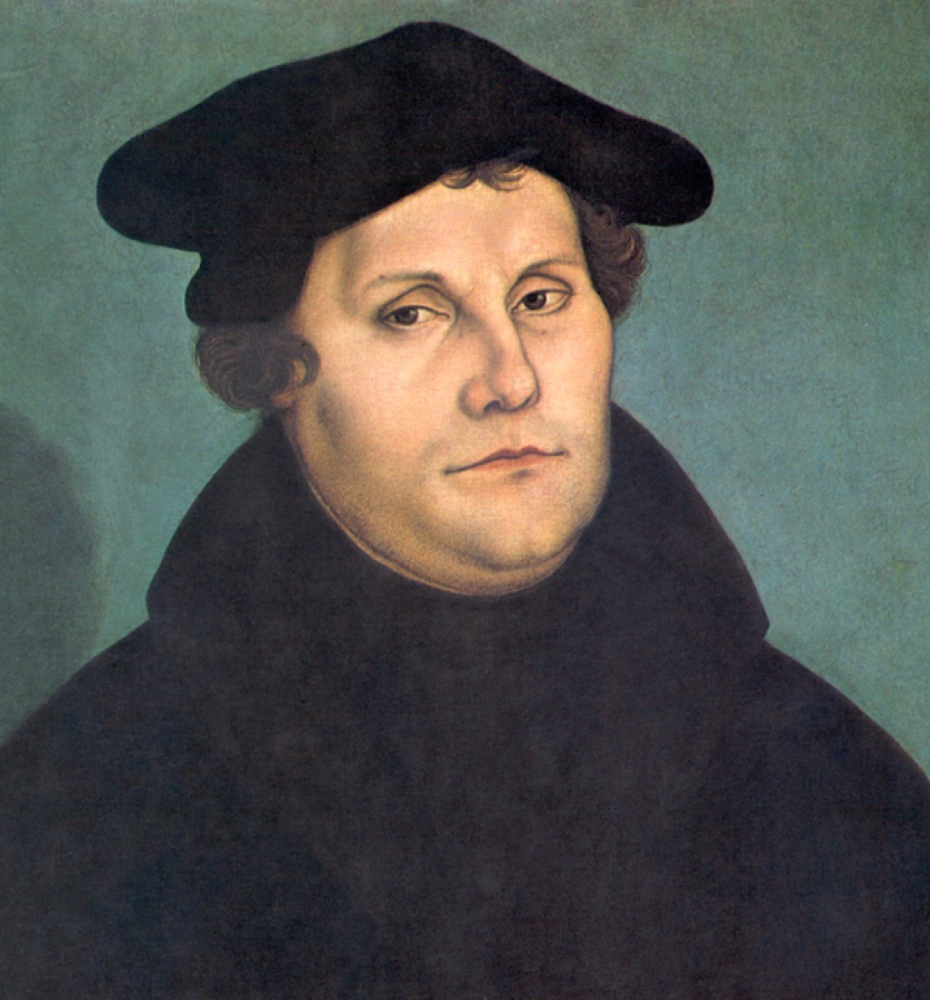

Luther's school, Luther's chorales

From about the age of seven, a small boy walked to Eisenach's Latin school under the shadow of a castle. The school was the one Martin Luther had attended two centuries earlier; the castle was the Wartburg, where Luther — in hiding, living under a false name — had translated the New Testament into German. The boy sang in the school's chorus musicus, the choir that led congregational singing at the Georgenkirche and sang through the streets for alms. Every element of that sentence is documented, and every element is doing work, because the geography of Bach's childhood was theological before he could have known the word. He was not merely raised Lutheran. He was raised inside the physical landscape where Lutheranism had been made, singing its songs in the church where its maker had preached.
What he was absorbing there needs a moment's explanation, because it is the single most important piece of context on this timeline's craft track. Luther's Reformation was, uniquely among religious revolutions, a musical one. Luther wrote hymns himself; he declared music "next to theology" in honor — the formulation is his own — and he rebuilt worship around the chorale: the congregational hymn in German, plain and strong, meant not for trained choirs but for every voice in the room. Where other reformers stripped music out of church, Luther poured it in and handed it to the laity. By Bach's childhood, a century and a half on, Lutheran Germany possessed a repertoire of hundreds of chorales that everyone — cobbler, duchess, schoolboy — knew by heart. It was the shared musical vocabulary of an entire civilization, the one body of melody a composer could assume every listener carried inside them.
Bach learned that repertoire here, and he learned it the way it was designed to be learned: from the inside, as a singer, by singing, years before he could have analyzed a note of it. The distinction matters. The chorales were never study material to him, something acquired and consulted; they were first language, laid down in the body at the age when language is laid down, in a schoolyard and a choir loft and a street where singing earned the alms that helped keep poor scholars fed.
And they became the load-bearing material of everything he built. The cantatas are constructed on chorales. The Passions pause on them at every emotional summit, handing the story back to the congregation's own voice at exactly the moments of greatest weight. The organ works elaborate them in every form the tradition knew. And the 371 four-part chorale settings became — and remain, three centuries on — the textbook of Western harmony, the corpus from which students still learn what chords are and how they move. When the Craft section's essay on the chorale as Bach's classroom takes up this thread, its story starts in this schoolyard.
The comparison that fits best is literary: you cannot study Bach's sacred music without the chorales any more than you can study Shakespeare without the English Bible. In both cases a shared sacred text, known by heart across a whole society, gave an artist something modern artists rarely have — a common inheritance to build on, allude to, and transfigure, confident that the audience would feel every reference in their bones. This card marks where Bach came into that inheritance, exactly as his future congregations did: not by analysis but by absorption, one sung Sunday at a time. Craft and faith, the two forces this era keeps braiding together, were never separate here. In Luther's town they were the same lesson, taught in the same room, to the same small boy.
Continue with the era essay: Eisenach: born into the guild, or continue the story where childhood ends: the deaths of his parents.
Wolff, The Learned Musician, ch. 1
Gardiner, Music in the Castle of Heaven, ch. 2
→ full bibliography & links